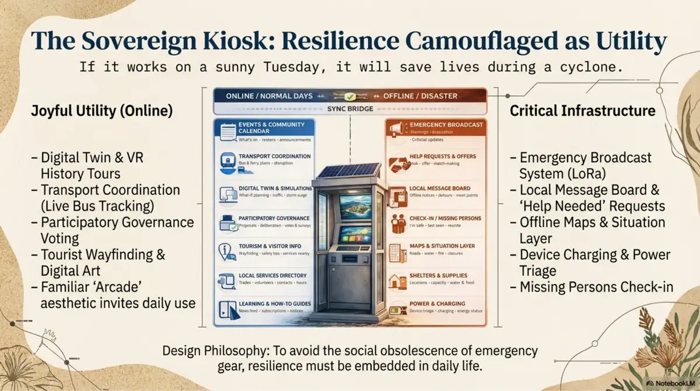

They can explain why shared assets need permission, care and a record.
Optional deep horizon
Mineral Moonshots is not the front door.
The deeper material can inspire builders, researchers and dreamers, but it should appear only after visitors understand the practical base: trust, jobs, media, grants, assets and clear boundaries.
Rabbit hole discipline
Let people earn the bigger map step by step.
Some people need the practical first step. Some need proof that a real job can come from this. Some need to see a trustworthy media and grant trail. Only some are ready for mineral-sands moonshots, subterranean systems, digital twins, sensoriums and spacefaring civilisation language.
That is not hiding the vision. It is pacing the vision so people can build skills, confidence and evidence before their scepticism turns reflexive.

Thresholds
When to send someone deeper.
Use these as gentle readiness signals.
They know this starts with ordinary jobs, training and services before moonshot systems.
They do not confuse public imagination with private data, legal authority or cultural permission.
They can ask "what is the next experiment?" instead of demanding certainty or rejecting everything.
The deeper material should call people toward action, care, research, repair and better decisions.
The deep link is an opt-in path, not a surprise in the first viewport.
Deep links
For people who ask what comes after the local training base.
Mineral Moonshots can show how local sand, infrastructure, public honour boards, digital twins, materials, food systems, kiosks, sports networks and future-world thinking connect. But this hub should use it as a later shelf, not as the first argument.
Pacing rule
Front door: useful work. Middle: trust and evidence. Deep path: Mineral Moonshots. That order gives people ground under their feet.